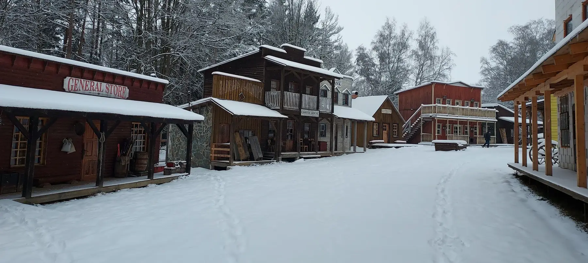

Divoký západ v lesích u Humpolce
Luk, laso, tomahawk a rýžovací pánev. Ve Stonetownu si všechno zkusíte sami.
- Sezóna
- V roce 2026 dočasně zavřeno
- Vstupné
- 100 Kč
- Děti do 120 cm
- zdarma
- Z dálnice
- D1, exit 90
Začalo to letními tábory v lese. Parta kamarádů k nim přistavěla jeden srub, pak druhý, a dnes tu stojí celá ulice.
Na Mainstreet najdete banku, úřad šerifa, kavárnu, kasino, obchod a kostel se zvonem. Žádný z těch domů není kulisa, do všech se dá vejít a ve všech se něco děje.
Stonetown není zábavní park. Je to místo, kde si western vyzkoušíte vlastníma rukama a kde vám u toho vždycky někdo poradí. Baví to děti i dospělé.
Co si zkusíte
Luk
Střelba na terč pro děti i dospělé.
Tomahawk a nože
Hod na dřevěný terč.
Laso a bič
Ukážeme, jak laso roztočit.
Podkova
Hod podkovou na kolík.
Rýžování zlata
Pánev, voda a trpělivost.
Střelnice
Na plechovky z dobových zbraní.
Dílny
Kožený váček, přívěsek, provaz, ruční papír.
Muzeum
Jak se osidloval Divoký západ.


Výlety, tábory a akce pro skupiny
Vyberte program a rovnou uvidíte dny, kdy je místo. Rezervace je potřeba vždy, jídlo zařídíme po domluvě.
Termíny a kapacity jsou v téhle ukázce vzorové. Ceny školních programů vycházejí z dřívějších sezón.
Poptávka termínu
Formulář se přizpůsobí programu, který vyberete. Hlídá velikost skupiny a rovnou počítá odhad ceny.
Program 2026
Takhle vypadal poslední vyhlášený rok. Termíny na rok 2027 doplníme.
Cesta a vstupné
D1, exit 90
Autem
Sjeďte u Humpolce. Dál vás na parkoviště dovedou cedule Stonetown. Parkování je zdarma.
Po modré
Vlakem
Vystupte na zastávce Kamenice u Humpolce na trati Havlíčkův Brod – Humpolec a jděte po modré turistické značce.
100 Kč
Vstupné
Za osobu. Děti do 120 cm neplatí. Vstupné platí i ten, kdo jde jen do kavárny. Na návštěvu si nechte 2,5 hodiny.